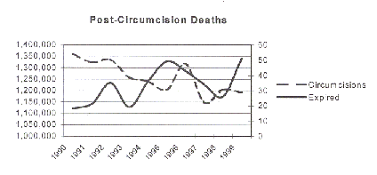

<HTML><HEAD><BASE HREF="http://www.cirp.org/library/statistics/bollinger2001/">

<TITLE>Normal versus Circumcised: U.S. Neonatal Male Genital Ratio</TITLE>
<META NAME="robots" content="index, follow">

<META NAME="keywords" CONTENT="circumcision, neonatal circumcision, non-therapeutic circumcision, United States, USA, U.S.A., America, United States of America, incidence, statistics, epidemiology, distribution, percentages"> 
<META NAME="description" CONTENT="This white paper reports on the absolute number of circumcisions and the percentage of boys preserved intact in the United States.">
</HEAD>
<BODY BGCOLOR=#FFFFFF>
<P>&nbsp;
<P><blockquote><blockquote><font face="arial" size="5">
<I>Normal versus Circumcised: U.S. Neonatal Male Genital Ratio</I></font><BR><font face="arial" size="3">
<B>By Dan Bollinger, &copy; 2001 Revised: 7/1/2001</B></font> <font face ="arial" size="2">
<P align="justify">
Interest in the genital integrity issue continues to grow and trustworthy statistics are necessary for an informed debate.  No United States health agency publishes the annual percentage rates neonatal males are circumcised versus left intact.  The American Academy of Pediatrics complained that statistics being cited are outdated and inaccurate.<SUP>1</SUP> The goal of this paper is to provide recent and accurate statistics for that discussion.   This white paper addresses United States neonatal male circumcisions performed in hospitals. 
<P align="justify">
<B>Source Data:</B> According to the <A HREF="http://www.census.gov/population/www/socdemo/birth.html">U.S. Census Bureau</A> the most accurate figures for live births is the <A HREF="http://www.cdc.gov/nchswww/">National Center for Health Statistics</A> (NCHS).<SUP>2</SUP>  Live births for 1990-1999 are from the NCHS report <A HREF="http://www.cdc.gov/nchs/data/nvsr/nvsr49/nvsr49_01.pdf">Births: Final Data for 1999</A>, 100% samplings. The NCHS tracks the sex ratio; in recent years it has been 1047 males for every 1000 females born live, or 51.15%.<SUP>3</SUP>  This figure has changed little in the past 50 years and is used to calculate male births for all years except 1998-99. All other statistics are from health care analysts <A HREF="http://www.hcia.com/default.asp">HCIA-Sachs</A> <http://www.hcia.com/default.asp> who compiled a 33% sampling <I>Inpatient View</I> report on annual male<SUP>4</SUP> neonate<SUP>5</SUP> circumcisions<SUP>6</SUP> performed in hospitals between 1990 and 1999. 
<P align="justify">
<P><center>
</center> 
<P align="justify">
The circumcision rate for 1999 is 58.8% with a corresponding intact rate of 41.2%. The last time the circumcision rate was this low was around 1934, 64 years ago.  In 1979 an estimated 15% of boys retained their normal penis,<SUP>9</SUP> compared with the 41.2% intact rate for 1999.  The intact rate has increased 275%, or almost three-fold, during that twenty-year period.  The number of circumcisions for 1999 dropped 1.1% from the previous year.
<P>&nbsp;
<P>&nbsp;
<P>&nbsp;
<P>&nbsp;
<P align="justify">
Neonatal circumcisions account for 99.3% of U.S. circumcisions.  It is the most often performed surgery in the U.S.A.<SUP>10</SUP> Hospital circumcisions account for an estimated 99% of U.S. circumcisions.<SUP>11</SUP><P align="justify"> 

<P align="justify">
Mean neonatal health-care charges during a hospital stay that included circumcision was $1869 (1999).  In 1999 commercial insurance paid for 63.9% of charges; Medicaid paid for 25.9%.
<P align="justify">  
Medicaid paid at least $35 million for circumcision in 1999. Deaths from circumcision and related causes are estimated at 229 per year.  Although the number of circumcisions has decreased, infant deaths have increased in general. 
<P align="justify">
The number of circumcisions vary by region.  Over the past ten years numbers in the West, Northwest and North Central regions have dropped while the numbers in the South region have risen. 
<P>&nbsp;<P>&nbsp;<P>&nbsp;
<P align="justify">

Racial make-up of patients changed over the past ten years.  White rates are down ~17%.  African-American rates are down ~3%.  Asian rates are up ~350%. Indian rates are up ~800% and Hispanic rates are up ~260%. 
<P>
&nbsp;<P>&nbsp;<P>&nbsp;<P>
<I>This report will be updated annually as date becomes available.</I>
<P>
<HR width="40%" color="black" align="left" size="1">
<OL>
<LI><!1> <A HREF="/library/statements/aap1999/">Circumcision Policy Statement </A>(RE9850), Amer. Acad. Ped. Volume 103, Number 3, March 1999, pp. 686-693 
<LI><!2> &lt:<A HREF="http://www.census.gov/population/www/socdemo/birth.html">http://www.census.gov/population/www/socdemo/birth.html</A>&gt;
<LI><!3> Births: Final Data for 1998, NCHS, &lt;<A HREF="http://www.cdc.gov/nchs/data/nvs48_3.pdf">http://www.cdc.gov/nchs/data/nvs48_3.pdf</A>&gt;; see Sex Ratio, p. 8
<LI><!4> HCIA reported 8 female circumcisions performed as a secondary procedure in 1991, but none elsewhere in the 1990-99 findings. 
<LI><!5> Less than 28 days old
<LI><!6> ICD-9 64.0 Circumcision
<LI><!8> British Department of Health and Social Security 1972 National Census, from records of 400,000 males under the age of one year old the circumcision frequency rate was 0.41%
<LI><!10> J. M. Appleby, Top 25 inpatient procedures, <I>Managed Healthcare</I>, Oct, 2000 
<LI><!11> &lt;<A HREF="http://www.hcia.com/findings/990513_circum.htm#1993">http://www.hcia.com/findings/990513_circum.htm#1993</A>&gt;
<LI><!12> Committee on Fetus and Newborn: <I><A HREF="/library/statements/aap/#1977">Standards and Recommendations for Hospital Care of Newborn Infants</A></I>. Sixth Edition. American Academy of Pediatrics; Evanston, IL 60204, 1978:p. 66-7
<LI><!13> Thompson HC, King LR, Knox E, et al. <A HREF="/library/statements/aap/#1975">Report of the ad hoc task force on circumcision</A>, <I>Pediatrics</I>, Vol. 56 No. 4: Pages 610-611, October 1975. 
<LI><!14> Report 10 of the Council on Scientific Affairs (I-99), <A HREF="/library/statements/ama2000/">Neonatal Circumcision</A>, American Medical Association
<LI><!15> J. W. Travis, G. Denniston, R. Cruz, J. S. Svoboda, A. Craig, <I>Tax Dollar Funding of Medically Unnecessary Circumcisions Through Medicaid</I>, International Coalition for Genital Integrity, 2001
<LI><!16> ibid.
<LI><!17> Estimated circumcision related deaths are 229 per year. Baker RL. <A HREF="/library/general/baker1/">Newborn male circumcision: needless and dangerous</A>. <I>Sexual Medicine Today</I> 1979;3(11):35-36.
<LI><!18> Northeast: CT, ME, MA, NH, NJ, NY, PA, RI, VT North Central: IL, IN, IA, KS, MI, MN, MO, NE, ND, OH, SD, WI South: AL, AR, DE, DC, FL, GA, KY, LA, MD, MS, NC, OK, SC, TN, TX, VA, WV West: AK, AZ, CA, CO, HI, ID, MT, NV, NM, OR, UT, WA, WY.
</OL>
<P>
<I>Cite as:</I>  Bollinger D, Normal versus Circumcised: U.S. Neonatal Male Genital Ratio, white paper, 7/1/2001.
<P>
</font></blockquote></blockquote>
<HR>
Cite as:
<UL>
<LI>Bollinger D, <I>Normal versus Circumcised: U.S. Neonatal Male Genital Ratio</I>, white paper, 1 July 2001.


</UL>
<HR>
<SMALL>(File created 13 July 2001)</SMALL>

<P ALIGN=CENTER><A HREF="/library/">Return to CIRP library</A>

<P><TT>http://www.cirp.org/library/statistics/bollinger2001/</TT>
</BODY></HTML>

<P>&nbsp;&nbsp;&nbsp;&nbsp;&nbsp;&nbsp;&nbsp;&nbsp;&nbsp;&nbsp;
Binary file (standard input) matches
